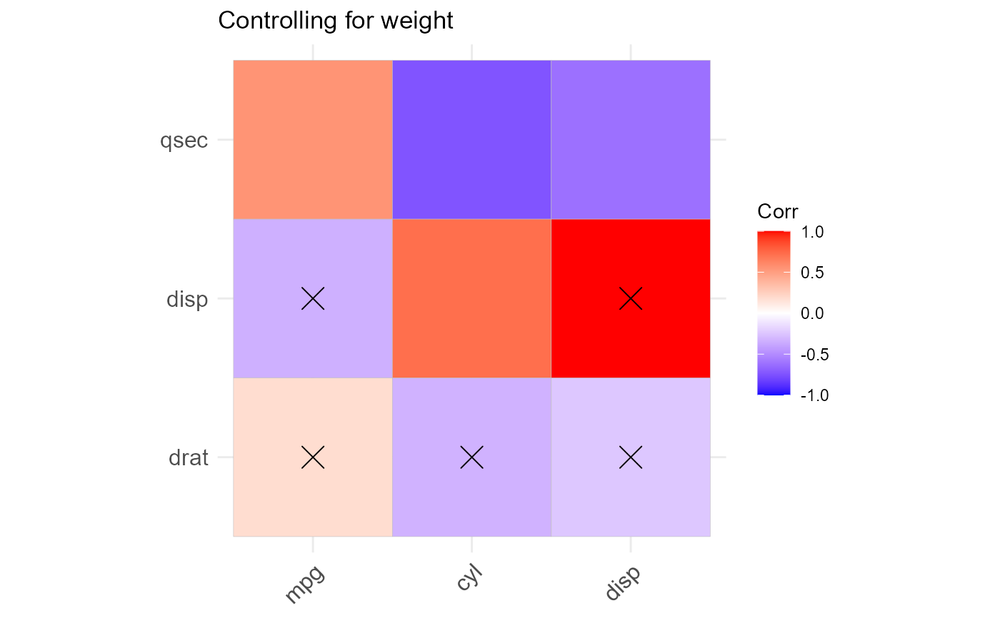

Creates an object of class 'corx'. This function calculates correlation matrices. It stores effect sizes, p-values, the number of pairwise observations, and a formatted correlation matrix in a list. The argument 'z' allows for control variables to be assigned. If z does not equal NULL, partial correlations are performed. Methods are exported for the generic functions 'print', 'plot', 'summary', 'data.frame' and, 'coef'.
corx(data, x = NULL, y = NULL, z = NULL, method = c("pearson", "spearman", "kendall"), stars = c(0.05), round = 2, remove_lead = TRUE, triangle = NULL, caption = NULL, note = NULL, describe = FALSE, grey_nonsig = TRUE)
| data | A data.frame or matrix |
|---|---|
| x | a vector of rownames. Defaults to all |
| y | a vector of colnames. Defaults to all |
| z | a vector of colnames. Control variables to be used in partial correlations - defaults to NULL |
| method | a string. One of "pearson", "spearman", or "kendall" |
| stars | a numeric vector. This argument defines cut-offs for p-value stars. |
| round | a scalar. Number of digits in printing |
| remove_lead | a logical. if TRUE (the default), leading zeros are removed in summaries |
| triangle | one of "lower", "upper" or NULL (the default) |
| caption | table caption. Passed to plots |
| note | table note |
| describe | a list of functions. If functions are supplied to describe, new columns will be bound to the 'APA matrix' for each function in the list. Describe also accepts a variety of shortcuts. If describe is set to TRUE, mean and standard deviation are returned for all row variables. Describe can accept a character vector to call the following descriptive functions: c('mean','sd','var','median','iqr','skewness','kurtosis'). These shortcuts are powered by 'tidyselect'. Skewness and kurtosis are calculated using the 'moments' package. All functions retrieved with shortcuts remove missing values. |
| grey_nonsig | a logical. Should non-significant values be grey in output? This argument does nothing if describe is not set to FALSE |
A list of class 'corx' which includes:
"call" The call
"apa" An 'APA' formatted correlation matrix with significance stars
"r" Raw correlation coefficients
"p" Raw p-values
"n" Pairwise observations
"caption" Object caption
"note" Object note
'corx' constructs intercorrelation matrices using 'psych::corr.test'. P-values attained are not adjusted for multiple comparisons. The argument z can be used to specify control variables. If control variables are specified, partial correlations are calculated using 'ppcor::ppcor.test'. Asymmetrical correlation matrices can be constructed using the arguments 'x' and 'y'. The arguments 'x', 'y', and 'z' are powered by 'tidyselect::vars_select'.
cor_mat <- corx(mtcars, x = c(mpg,cyl,disp), y = c(wt,drat,disp,qsec), z = wt, round = 2, stars = c(0.05), caption = "Controlling for weight" , describe = list("mean" = function(x) mean(x,na.rm=TRUE))) cor_mat#> corx(data = mtcars, x = c(mpg, cyl, disp), y = c(wt, drat, disp, #> qsec), z = wt, stars = c(0.05), round = 2, caption = "Controlling for weight", #> describe = list(mean = function(x) mean(x, na.rm = TRUE))) #> #> Controlling for weight #> --------------------------- #> drat disp qsec mean #> --------------------------- #> mpg .18 -.34 .55* 20.09 #> cyl -.33 .72* -.74* 6.19 #> disp -.24 - -.62* 230.72 #> --------------------------- #> Note. * p < 0.05coef(cor_mat)#> drat disp qsec #> mpg 0.1806278 -0.3371636 0.5456251 #> cyl -0.3260334 0.7235673 -0.7413854 #> disp -0.2404013 1.0000000 -0.6151686cor_mat$p#> drat disp qsec #> mpg 0.33085441 6.361981e-02 1.499883e-03 #> cyl 0.07346184 4.234471e-06 1.830433e-06 #> disp 0.19267873 0.000000e+00 2.306237e-04plot(cor_mat)cor_2 <- corx(iris[,-5], describe = c(median, IQR = iqr, kurt = kurtosis), note = "Using shortcuts to select describe functions", triangle = "lower") cor_2#> corx(data = iris[, -5], triangle = "lower", note = "Using shortcuts to select describe functions", #> describe = c(median, IQR = iqr, kurt = kurtosis)) #> #> ------------------------------------------------ #> 1 2 3 median IQR kurt #> ------------------------------------------------ #> 1. Sepal.Length - 5.80 1.30 2.43 #> 2. Sepal.Width -.12 - 3.00 0.50 3.18 #> 3. Petal.Length .87* -.43* - 4.35 3.50 1.60 #> 4. Petal.Width .82* -.37* .96* 1.30 1.50 1.66 #> ------------------------------------------------ #> Note. Using shortcuts to select describe functions